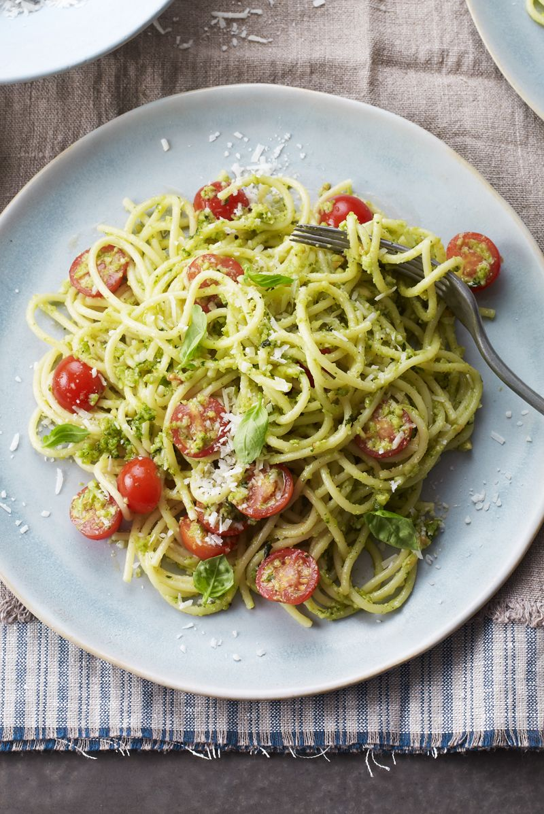

Pasta alla Trapanese

Description
An absolute classic in my house... A recipe for any occasion or time of the year,
easy to make, nutritious and full of fresh flavours.
Ingredients
- 500g of spaghetti
- 1 hanful of finely cut almonds
- 1 handful of basil
- 2 garlic cloves
- 4 tablespoons of extra-virgin olive oil
- 8-10 cherry tomatoes
- parmesan or pecorino cheese to taste
- salt and pepper to taste
Steps
- Add salt and water to a pan and heat up. Once boiling,
add the spaghetti and allow to cook up to 2 minutes less than it says on the package.
We're going for al dente here.
- Heat up a large frying pan and dry fry almonds until golden. Careful not to burn.
- Put the cooked almonds, 2 garlic cloves and handful of basil in a food
processor and blend until desired consistency.
- Slice the cherry tomatoes in halves, grate the cheese and set aside.
- Once the pasta is done, add the almond, garlic and basil mix, together
with the tomatoes, cheese and the olive oil. Mix it all up.
- Add salt and pepper if needed as well as some pasta water to make it creamier
- Enjoy!